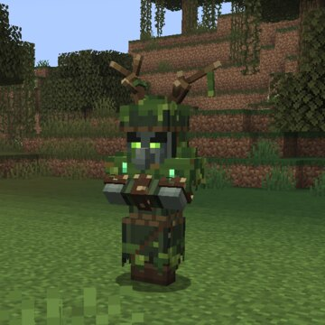
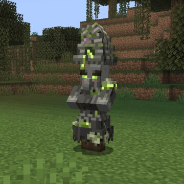
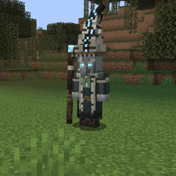

The Thornbound Grimoire
The pillagers guard a black book bound in iron brambles. They stole it, the woodsmen say, from something older and worse than themselves. It whispers to whoever carries it, it sets riddles in its margins, and every spell in it asks a price.
Finding the book
Search a pillager outpost. The first outpost chest you open holds the grimoire; after that, about one chest in seven has another. Once you've held it, you've been marked (see the coven). The Field Guide's Thornbound chapter tells the same story from the woodsmen's side.
Casting
Open it
Crouch and use the book to read it. Click a page's ribbon tab to mark it.
Cast
Use the book (without crouching) to cast the marked spell, pointing at what you want it to touch.
Pay
Most spells use something up (bone meal, a feather, copper) and all of them take a price: life from the land, your blood, a soul. Nothing in the book is free.
Runes, pencil, ink and gold
A page starts as runes and can't be cast. Answer its riddle with a deed and it becomes a spell in pencil. Cast it on five different days (only your first cast each day counts) and the margin asks for something harder: do it and the page is inked, stronger. Twelve days of practice and a last riddle illuminate it in gold, stronger still. The tally of days is drawn in the margin. Coven Ink from the druids adds a day of practice to the marked page at once.
The spells
| Spell | What it does | Its price | Uses |
|---|---|---|---|
| Quickening | Ripens the crops in a field by a season at once, even in winter. 3×3 in pencil, 5×5 inked, 7×7 gilded. | The grass and flowers within a few blocks die, one for each growth stage given. | Bone meal |
| Crowcall | Calls a murder of crows down on what you point at. They come hungry, and they remember your face. | A drop of your blood. | A feather |
| Bramble Snare | Thorns tear up out of the earth and hold whatever stands there, longer at each rank. | Two hearts of your own. | A thorny berry |
| Soul Entrapment | Lay the book on a living thing to draw its soul into the pages, and on the ground to let it out: carry a cow home in your pocket. Holds one soul in pencil, two inked, three gilded. Anything but the great bosses. | Blindness, weariness and weakness, heavier for each soul held; you stay weak while you carry them. | Nothing |
| Soulflame | Burns the chosen soul from the book: blue fire pours out over everything before you, and what it touches burns and flees. Reaches further and burns harder at each rank. | The soul, gone for good. | A soul from Soul Entrapment |
| Stormcall | Calls lightning down where you point: one bolt in pencil, two inked, three gilded. | Sometimes the bolt finds you instead (less often at each rank, and half as often in a thunderstorm). | A copper ingot |
| The Swarm | The flowers around you burst into wild bees (4, then 6, then 9) that fall on what you point at, then fly home. | Every flower that gives a bee dies. | Flowers near you |
Quickening, Crowcall and Bramble Snare are bound in the book. The rest were torn out (below). Each page's riddles, if you want them:
Secret the riddles of Quickening
To learn it: “Wake the green with bone, and let the grass pay.”
To ink it: “Wake the green in the dead of winter.”
To gild it: “Let the land die for a harvest of gold.”
Secret the riddles of Crowcall
To learn it: “Let the black birds feed thrice upon your harvest, and do not drive them off.”
To ink it: “Let the crows take a life.”
To gild it: “Let them take a raider.”
Secret the riddles of Bramble Snare
To learn it: “Bleed upon the bramble beneath a moon with no light.”
To ink it: “Hold a beast until it bleeds out.”
To gild it: “Hold the one who bears the banner.”
Secret the riddles of Soul Entrapment
To learn it: “Slay a soul that another has bound.”
To ink it: “Carry a soul a thousand paces.”
To gild it: “Carry a soul between worlds.”
Secret the riddles of Soulflame
To learn it: “Let a soul burn in blue fire.”
To ink it: “Burn a soul that bore a name.”
To gild it: “Let one burning take three lives.”
Secret the riddles of Stormcall
To learn it: “Stand where the lightning falls, and be struck.”
To ink it: “Wake the creeper's fire.”
To gild it: “Make a witch of an innocent.”
Secret the riddles of The Swarm
To learn it: “Let the wild ones sting you.”
To ink it: “Let the swarm take a life.”
To gild it: “Let a hundred flowers die for it.”
Torn pages
Four pages were torn from the book and carried off. Use a torn page with the grimoire on you to bind it back in (as runes, to be learned by its riddle). Each page is named for its spell. The Field Guide only hints where they went:
Secret where the torn pages are
- Soul Entrapment: on evokers you kill (about 1 in 3) and in woodland mansion chests (1 in 4)
- Soulflame: in Nether fortress chests (1 in 4)
- Stormcall: in shipwreck supply and treasure chests (1 in 5) and big underwater ruins (1 in 4)
- The Swarm: in wild bee nests broken by hand (about 1 in 3)
The coven



The book's first owners want it back. On the night of a full moon, if you've ever held the grimoire and you're in a forest or taiga, a coven of three to five druid illagers, led by a Stormcaller, comes for you once that night, at an hour of its own between dusk and midnight.
Half a minute before, the dread: the forest goes quiet (the book whispers, if you carry it), a low chant drifts out of the trees, and a branch snaps. They rise out of the earth where the chant came from, one after another, a horn sounds, and Evil lurks nearby... They roam towards you and cast the book's own spells from a distance, keeping out of reach:
- Thornwarden: Bramble Snare. Thorns burst up around you and hold you.
- Hivecaller: The Swarm. The flowers near you become angry bees.
- Stormcaller: Stormcall. It marks where you stand (the ground crackles), then the bolt falls there. Keep moving. Lightning can't hurt it.
At sunrise, any still standing sink back into the moss. Server operators can call a party at once with /coven.
What they leave
Every druid you kill drops one or two Coven Ink: drink it with the grimoire on you to give the marked page a day's practice. About one in twelve drops its pointed hat: Thornwarden's Crown Hivecaller's Skep Stormcaller's Spire. Wear them; a hat from a druid in the coven's other colours keeps them.
Advancements
The grimoire has its own dark tab of thirteen advancements:
- The Thornbound Grimoire: Take the illagers' spellbook.
- Nothing Is Free: Cast a spell, and pay its price.
- The Book Asks: Answer one of the book's riddles.
- Set in Ink: Master a spell until its page is inked.
- Illuminated: Master a spell until its page burns with gold.
- Bound in Thorn: Illuminate every page (a challenge).
- Torn Out: Bind a torn page back in.
- Whole Again: Bind every torn page back in.
- Bottled: Trap a living soul between the pages.
Secret the four hidden ones
- Evil Lurks Nearby: Be found by the druid coven.
- Borrowed Ink: Feed Coven Ink to a page.
- Unmade: Strike down one druid of each kind.
- Pointed Hat: Wear a druid's hat.